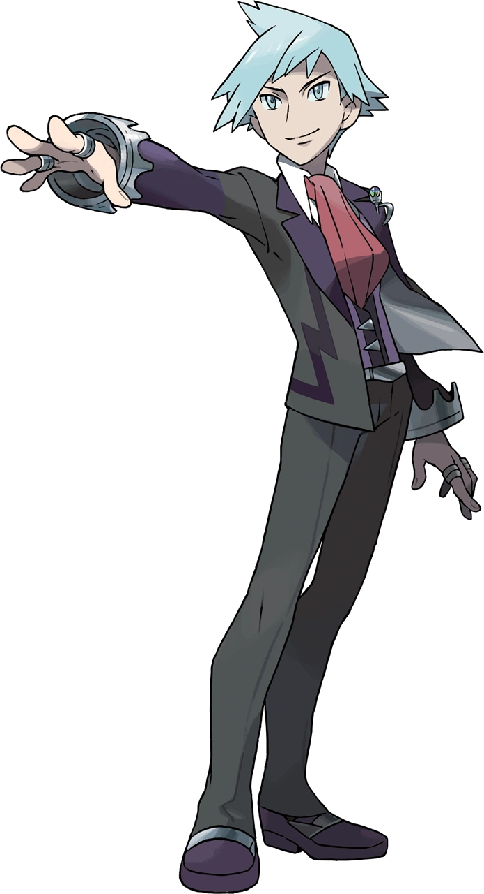
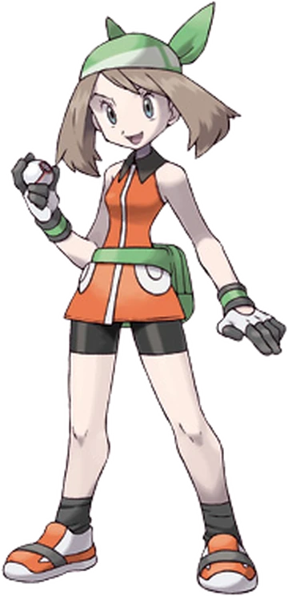
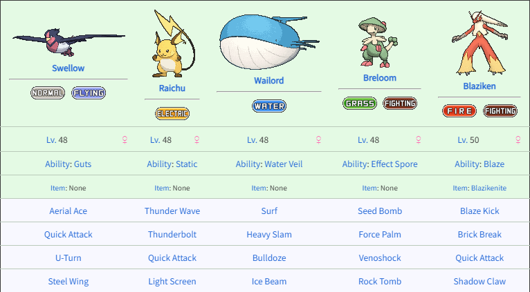

Steven Stone é o grande Campeão da Liga Pokémon da região de Hoenn, tendo conquistado o título em algum momento antes dos eventos das versões Ruby e Sapphire e seus remakes; na versão Emerald, não defende o título, que pertence a Wallace. É um especialista em Pokémon do tipo (Aço).
Steven é um colecionador de pedras raras. Reside em Mossdeep City, mas está frequentemente viajando em busca de pedras, não sendo comum encontrá-lo em sua casa, na qual mantém uma pequena exposição particular de seus itens.
Esse time do Steven é composto por alguns dos Pokémon mais poderosos e icônicos da terceira geração, incluindo Metagross e Aggron. Esse time é conhecido por sua força e versatilidade, tornando Steven um adversário formidável na Liga Pokémon.

Brendan é o protagonista masculino dos jogos Pokémon da Geração III. Ele é um treinador de Pokémon determinado e corajoso, conhecido por sua habilidade e inteligência. Brendan embarca em uma jornada pela região de Hoenn, enfrentando desafios, capturando Pokémon e batalhando contra líderes de ginásio para se tornar o Campeão da Liga Pokémon. Sua história destaca a importância da amizade, perseverança e crescimento pessoal ao longo da aventura.


Esse time do Brendan não é oficial, mas seria algo parecido. É composto por alguns dos Pokémon mais poderosos e icônicos da terceira geração, incluindo Sceptile e Sharpedo . Esse time é conhecido por sua força e versatilidade, tornando Brendan um adversário formidável na Liga Pokémon.
Em Pokémon Emerald, May é a protagonista feminina ou a rival do jogador, dependendo da sua escolha. Ela é uma treinadora dedicada de Pokémon, filha de um pesquisador ou líder de ginásio, que embarca em uma jornada pela Região de Hoenn.
May é conhecida por sua personalidade amigável e otimista, além de sua paixão por concursos Pokémon, onde ela pode mostrar suas habilidades de treinamento e estilo. Ao longo do jogo, May enfrenta desafios, captura Pokémon e compete em concursos para se tornar uma coordenadora renomada.
 Esse é o time da May nos jogos Omega Ruby e Alpha Sapphire. É composto por alguns dos Pokémon mais poderosos e icônicos da terceira geração, incluindo Blaziken e Breloom. Esse time é conhecido por sua força e versatilidade.